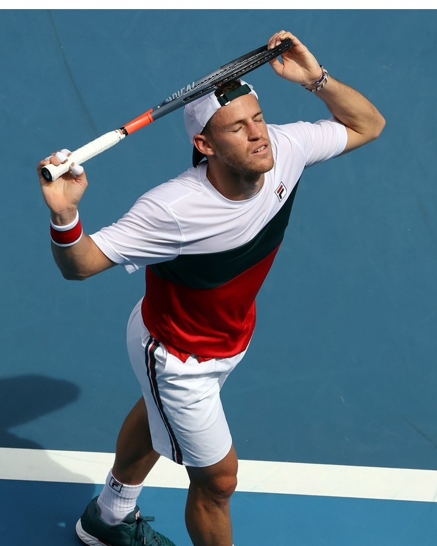
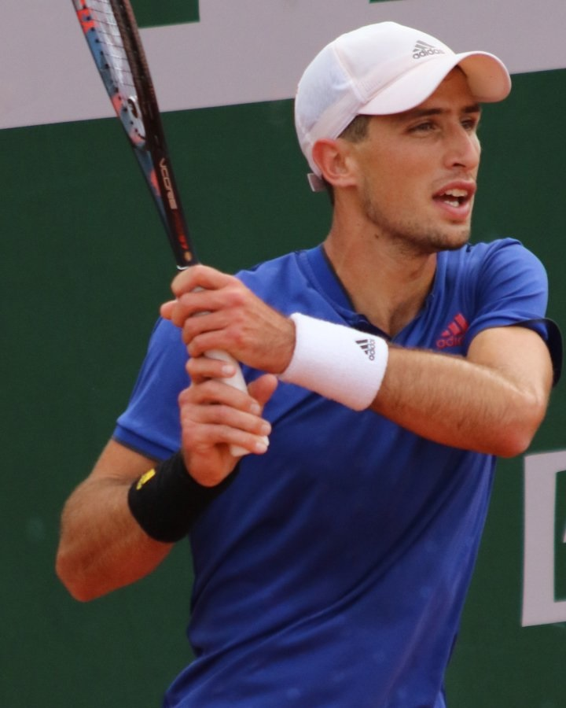
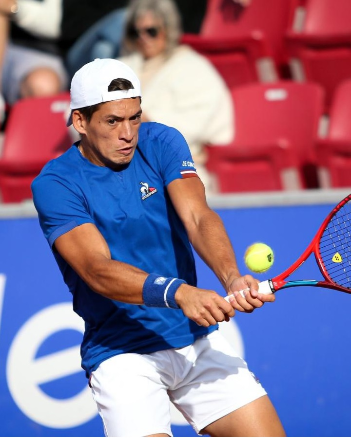

Schwartzman cayó ante Tsitsipas
El argentino mejor rankeado no pudo superar al griego en Cincinatti
Cerundoló ganó en el ATP 500 de Viena
El bonaerense accedió a segunda ronda en el torneo austriaco

Pella se pone en forma para su regreso
El bahiense entrena con miras a 2023 y recuperar su mejor nivel

Cachin accedió a segunda ronda
El Cordobés derrotó a Moutet en su debut en el challenger de Santo Domingo
Sebastián Báez avanza en Nápoles
El bonaerense venció al italiano Sonego por un ajustado 7-5 y 7-6
